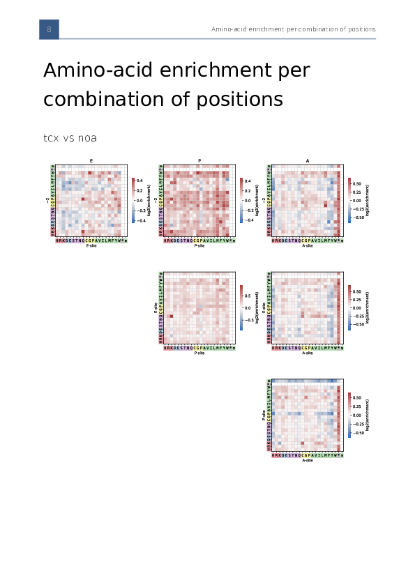
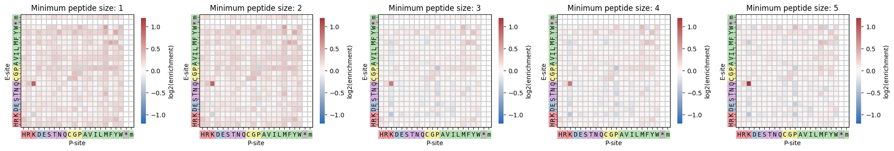
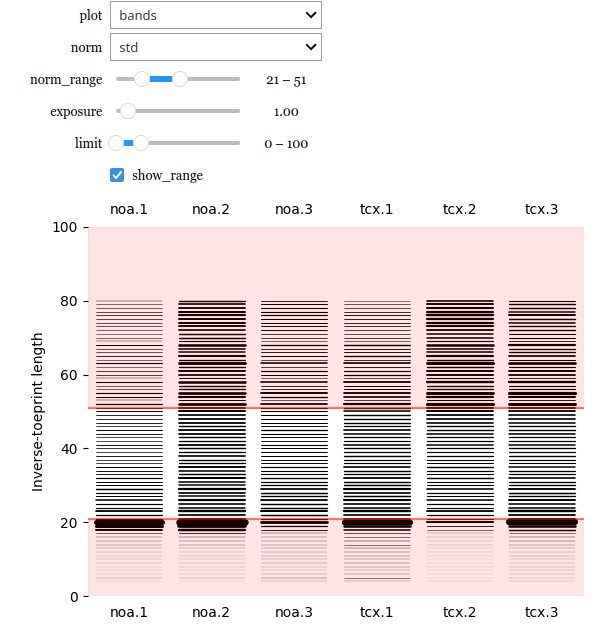

Tutorials
¶

Generating a report

Manually creating custom graphs
Creating graphs and tables

Interactive virtual inverse toeprint
iTP-Seq
Navigation
Tutorials
Generating a report
Manually creating custom graphs
Creating graphs and tables
Interactive virtual inverse toeprint
API
Related Topics
Documentation overview
Previous:
Welcome to iTP-Seq’s documentation!
Next:
Generating a report